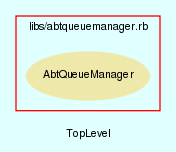

|  |
AbtQueueManager.rb
AbtQueueManager class handles all AbTLinux queue interaction.
Created by Eric D. Schabell <erics@abtlinux.org> Copyright 2006, GPL.
This file is part of AbTLinux.
AbTLinux is free software; you can redistribute it and/or modify it under the terms of the GNU General Public License as published by the Free Software Foundation; either version 2 of the License, or (at your option) any later version.
AbTLinux is distributed in the hope that it will be useful, but WITHOUT ANY WARRANTY; without even the implied warranty of MERCHANTABILITY or FITNESS FOR A PARTICULAR PURPOSE. See the GNU General Public License for more details.
You should have received a copy of the GNU General Public License along with AbTLinux; if not, write to the Free Software Foundation, Inc., 51 Franklin St, Fifth Floor, Boston, MA 02110-1301 USA
Constructor for the AbtQueueManager class.
RETURN AbtQueueManager - an initialized AbtQueueManager object.
[ show source ]
# File AbtQueueManager.rb, line 41
41: def initialize
42: end
Add/Remove a given package to the given queue. If adding a package already in the queue then it will not be added twice and return succes.
PARAM String - the package to be added/removed. PARAM String - the queue.
RETURN boolean - true if action succeeds, otherwise false.
[ show source ]
# File AbtQueueManager.rb, line 54
54: def actionPackageQueue( package, queue, action="add" )
55: require 'fileutils'
56: logger = AbtLogManager.new
57: queueFile = "" # used to hold the queue location.
58:
59: # want to name install queue differently from log files.
60: if ( queue == 'install' )
61: queueFile = "#{$ABT_LOGS}/#{queue}.queue"
62: else
63: queueFile = "#{$ABT_LOGS}/#{queue}.log"
64: end
65:
66: if ( action == "add")
67: if (
68: log = File.new(
69: queueFile, File::WRONLY|File::APPEND|File::CREAT, 0644 ) )
70: # pickup queue contents to ensure no duplicates.
71: checkingQueue = IO.readlines( queueFile )
72:
73: # check if package exists, otherwise add.
74: if (
75: !checkingQueue.collect{ |i| i.split( '|' )[0] }.include?(
76: package ) )
77: log.puts "#{package}|#{$TIMESTAMP}"
78: logger.logToJournal( "Added #{package} to #{queue} queue." )
79: else
80: logger.logToJournal(
81: "Did not add #{package} to #{queue}, already exists." )
82: end
83:
84: log.close
85: return true
86: end
87: end
88:
89: if ( action == "remove" )
90: # remove entry from given queue.
91: if (
92: log = File.new(
93: queueFile, File::WRONLY|File::APPEND|File::CREAT, 0644 ) )
94: # use temp file to filter out entry to be removed.
95: temp = File.new(queueFile + ".tmp", "a+")
96:
97: # now check for line to be removed.
98: IO.foreach( queueFile ) do |line|
99: entryName = line.split( '|' )[0]
100: if ( entryName != package.downcase )
101: temp.puts line
102: end
103: end
104:
105: temp.close
106: FileUtils.mv( temp.path, queueFile )
107: end
108:
109: log.close
110: return true
111: end
112:
113: logger.logToJournal( "Failed to open #{queueFile}." )
114: return false
115: end